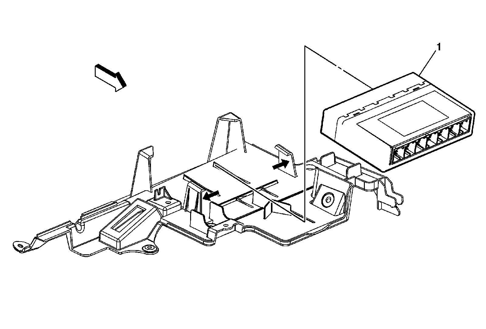
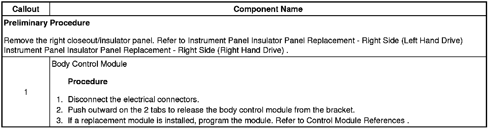

Operation CHARM
: Car repair manuals for everyone.
Home
>>
Cadillac
>>
2008
>>
SRX AWD V8-4.6L
>>
Repair and Diagnosis
>>
Relays and Modules
>>
Relays and Modules - Powertrain Management
>>
Relays and Modules - Computers and Control Systems
>>
Body Control Module
>>
Service and Repair
>>
Body Control Module Replacement (Right Hand Drive)
Body Control Module Replacement (Right Hand Drive)
Body Control Module
Replacement (Right Hand Drive)

